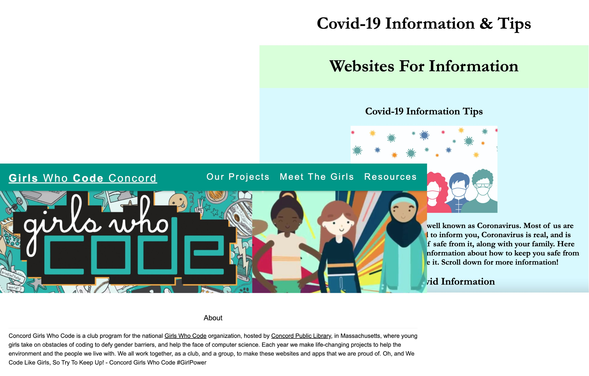
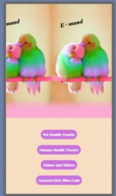

Girls
Who
Code
Concord
Our Projects
Meet The Girls
Resources
Projects
Check out our past websites and apps!
Save the Sea
Concord MA Girls Who Code Website
COVID Support Project Page
E-Muud (Pet Health Tracker)
Service Dogs Website
Adopting and Caring for Pets


2022
2021
2020
2019
2018
Save the Seas web game
Concord, MA Girls Who Code official website and Covid Support webpage
An app that allows users to track their pets' mood
A website with information on service dogs and service dog related games and activities
A fun website that spread awareness about animal shelters